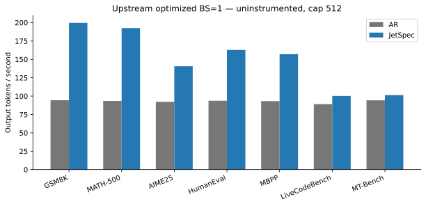
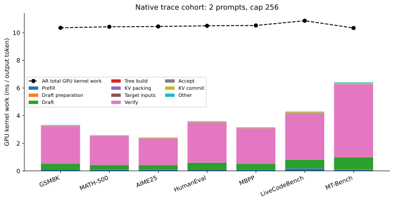
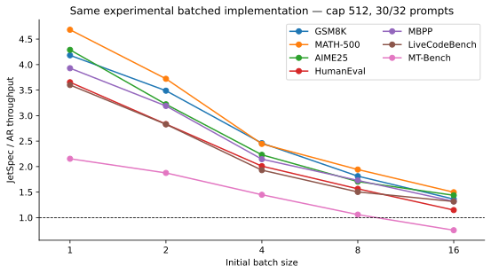
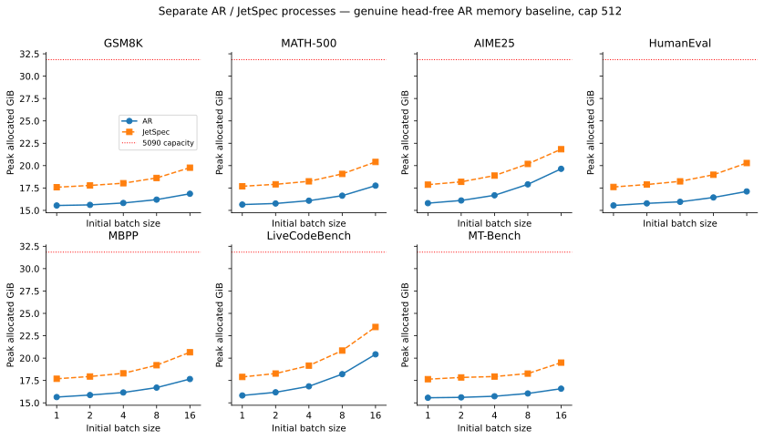
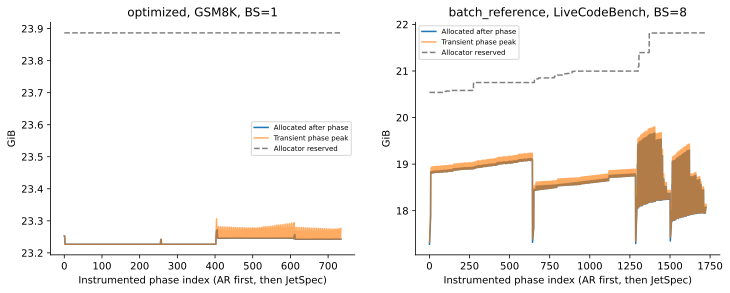

RTX 5090 32GB · Qwen3-8B BF16 · 2026-11-03 06:29 北京时间
实验矩阵已完成。主计划 168/168 个结果；63 份可读 timeline；GPU kernel 归因最低覆盖率 100.00%。
本报告比较 JetSpec 自己引擎的 AR 与 learned tree speculative decoding；不是 SGLang 对照。目标是解释 draft、verify、accept、KV 操作的 GPU 开销及批大小敏感性，不是完整复现论文速度或评测回答正确率。
当前已完成的原生 BS=1 加速范围：1.07–2.12×。这是独立、无 profiler 的 512-token-cap 测量；下方 GPU 分解来自另外的短 profile 样本。

| 数据集 | BS | AR tok/s | JetSpec tok/s | 加速比 | 平均接受长度 | AR 峰值 GiB | SD 峰值 GiB | 状态 AR/SD |
|---|---|---|---|---|---|---|---|---|
| GSM8K | 1 | 94.40 | 199.69 | 2.12 | 7.83 | 19.27 | 22.01 | success/success |
| MATH-500 | 1 | 93.48 | 192.68 | 2.06 | 8.82 | 20.60 | 23.29 | success/success |
| AIME25 | 1 | 92.23 | 140.62 | 1.52 | 8.29 | 23.26 | 26.08 | success/success |
| HumanEval | 1 | 93.69 | 162.86 | 1.74 | 6.66 | 19.29 | 22.02 | success/success |
| MBPP | 1 | 93.17 | 157.12 | 1.69 | 7.17 | 20.60 | 23.29 | success/success |
| LiveCodeBench | 1 | 89.02 | 100.21 | 1.13 | 6.88 | 23.27 | 26.10 | success/success |
| MT-Bench | 1 | 94.31 | 101.33 | 1.07 | 3.87 | 19.29 | 22.02 | success/success |

verify 在一次 forward 中处理整棵树，权重访问被多个候选 token 分摊；其单轮 GPU 成本应与每轮实际接受长度一起看。draft 与 verify 在当前单 GPU 实现中顺序执行，不存在 JetSpec++ 的跨卡重叠。

| 数据集 | BS | AR tok/s | JetSpec tok/s | 加速比 | 平均接受长度 | AR 峰值 GiB | SD 峰值 GiB | 状态 AR/SD |
|---|---|---|---|---|---|---|---|---|
| GSM8K | 1 | 62.17 | 260.00 | 4.18 | 7.77 | 15.54 | 17.59 | success/success |
| GSM8K | 2 | 98.17 | 342.47 | 3.49 | 7.77 | 15.61 | 17.78 | success/success |
| GSM8K | 4 | 162.36 | 399.30 | 2.46 | 7.78 | 15.82 | 18.03 | success/success |
| GSM8K | 8 | 258.17 | 468.00 | 1.81 | 7.76 | 16.20 | 18.62 | success/success |
| GSM8K | 16 | 374.38 | 510.05 | 1.36 | 7.78 | 16.86 | 19.77 | success/success |
| MATH-500 | 1 | 61.75 | 289.20 | 4.68 | 8.82 | 15.65 | 17.69 | success/success |
| MATH-500 | 2 | 102.99 | 383.29 | 3.72 | 8.97 | 15.77 | 17.91 | success/success |
| MATH-500 | 4 | 175.29 | 428.65 | 2.45 | 8.84 | 16.08 | 18.25 | success/success |
| MATH-500 | 8 | 265.31 | 515.34 | 1.94 | 8.92 | 16.64 | 19.07 | success/success |
| MATH-500 | 16 | 371.05 | 555.64 | 1.50 | 8.91 | 17.76 | 20.41 | success/success |
| AIME25 | 1 | 61.43 | 263.53 | 4.29 | 8.21 | 15.80 | 17.87 | success/success |
| AIME25 | 2 | 110.56 | 356.19 | 3.22 | 8.22 | 16.11 | 18.19 | success/success |
| AIME25 | 4 | 177.67 | 396.40 | 2.23 | 8.24 | 16.68 | 18.89 | success/success |
| AIME25 | 8 | 266.35 | 454.36 | 1.71 | 8.22 | 17.91 | 20.19 | success/success |
| AIME25 | 16 | 336.37 | 483.48 | 1.44 | 8.13 | 19.64 | 21.83 | success/success |
| HumanEval | 1 | 61.89 | 226.13 | 3.65 | 6.83 | 15.55 | 17.61 | success/success |
| HumanEval | 2 | 104.41 | 295.83 | 2.83 | 6.68 | 15.78 | 17.89 | success/success |
| HumanEval | 4 | 167.11 | 335.72 | 2.01 | 6.66 | 15.95 | 18.24 | success/success |
| HumanEval | 8 | 257.32 | 402.54 | 1.56 | 6.80 | 16.44 | 18.98 | success/success |
| HumanEval | 16 | 374.42 | 429.75 | 1.15 | 6.62 | 17.11 | 20.29 | success/success |
| MBPP | 1 | 61.04 | 239.85 | 3.93 | 7.29 | 15.65 | 17.69 | success/success |
| MBPP | 2 | 99.25 | 316.54 | 3.19 | 7.30 | 15.87 | 17.95 | success/success |
| MBPP | 4 | 163.46 | 350.73 | 2.15 | 7.13 | 16.16 | 18.30 | success/success |
| MBPP | 8 | 241.20 | 417.13 | 1.73 | 7.28 | 16.70 | 19.21 | success/success |
| MBPP | 16 | 353.29 | 465.83 | 1.32 | 7.36 | 17.66 | 20.65 | success/success |
| LiveCodeBench | 1 | 59.71 | 214.95 | 3.60 | 6.97 | 15.83 | 17.89 | success/success |
| LiveCodeBench | 2 | 101.88 | 288.22 | 2.83 | 6.96 | 16.18 | 18.28 | success/success |
| LiveCodeBench | 4 | 170.33 | 328.76 | 1.93 | 6.99 | 16.85 | 19.16 | success/success |
| LiveCodeBench | 8 | 240.91 | 362.09 | 1.50 | 6.98 | 18.21 | 20.84 | success/success |
| LiveCodeBench | 16 | 292.14 | 384.18 | 1.32 | 6.90 | 20.42 | 23.48 | success/success |
| MT-Bench | 1 | 61.29 | 132.02 | 2.15 | 3.93 | 15.57 | 17.64 | success/success |
| MT-Bench | 2 | 86.97 | 163.17 | 1.88 | 3.90 | 15.61 | 17.84 | success/success |
| MT-Bench | 4 | 125.92 | 182.34 | 1.45 | 3.91 | 15.74 | 17.94 | success/success |
| MT-Bench | 8 | 206.80 | 218.98 | 1.06 | 3.90 | 16.05 | 18.27 | success/success |
| MT-Bench | 16 | 324.69 | 244.43 | 0.75 | 3.93 | 16.58 | 19.50 | success/success |

OOM 是本实现与输入/生成长度下的容量边界，不等于 JetSpec 方法或生产引擎的普遍上限。reference 会反复构建 dense padded KV，KV packing/commit 可能主导时间或临时内存；请结合阶段 CSV 与 timeline 判断。

Qwen3-8B 的 target KV 理论增量为每 request-token 2×36×8×128×2 bytes = 144 KiB；5 个 target taps 的 BF16 feature 约 40 KiB/context-token。draft head 参数约 1.95 GiB；图缓冲、padding、dense KV 复制和临时 logits 使实际峰值更高。图像的横轴是采样阶段序号，不是等间隔 GPU 时间。
| 数据集 | NVTX 阶段 | 调用数 | Host range ms | GPU kernel ms | GPU ms/output token | Memcpy MiB |
|---|---|---|---|---|---|---|
| LiveCodeBench | AR/prefill | 2 | 122.91 | 97.00 | 0.1894 | 0.05 |
| LiveCodeBench | AR/decode_forward | 510 | 142.82 | 5,462.09 | 10.6681 | 0.00 |
| LiveCodeBench | JetSpec/prefill | 2 | 125.20 | 97.27 | 0.1900 | 0.05 |
| LiveCodeBench | JetSpec/draft_forward | 92 | 46.15 | 322.88 | 0.6306 | 2,614.45 |
| LiveCodeBench | JetSpec/tree_build | 92 | 74.06 | 5.96 | 0.0116 | 3.34 |
| LiveCodeBench | JetSpec/verify_forward | 92 | 83.71 | 1,722.51 | 3.3643 | 12.31 |
| LiveCodeBench | JetSpec/accept | 92 | 1,757.72 | 3.19 | 0.0062 | 0.12 |
| LiveCodeBench | JetSpec/kv_commit | 92 | 2,458.11 | 33.17 | 0.0648 | 6,473.46 |
| LiveCodeBench | AR/other | 2 | 5,470.01 | 2.79 | 0.0054 | 0.04 |
| LiveCodeBench | JetSpec/other | 2 | 638.43 | 14.93 | 0.0292 | 51.24 |
| MATH-500 | AR/prefill | 2 | 72.00 | 45.01 | 0.0879 | 0.01 |
| MATH-500 | AR/decode_forward | 510 | 138.41 | 5,291.16 | 10.3343 | 0.00 |
| MATH-500 | JetSpec/prefill | 2 | 72.02 | 44.98 | 0.0879 | 0.01 |
| MATH-500 | JetSpec/draft_forward | 58 | 28.11 | 177.54 | 0.3468 | 1,168.52 |
| MATH-500 | JetSpec/tree_build | 58 | 44.03 | 3.77 | 0.0074 | 2.10 |
| MATH-500 | JetSpec/verify_forward | 58 | 51.31 | 1,065.11 | 2.0803 | 7.76 |
| MATH-500 | JetSpec/accept | 58 | 1,090.22 | 2.20 | 0.0043 | 0.08 |
| MATH-500 | JetSpec/kv_commit | 58 | 758.86 | 17.85 | 0.0349 | 1,882.39 |
| MATH-500 | AR/other | 2 | 5,298.18 | 2.67 | 0.0052 | 0.03 |
| MATH-500 | JetSpec/other | 2 | 375.42 | 9.43 | 0.0184 | 29.13 |
| AIME25 | AR/prefill | 2 | 72.98 | 46.56 | 0.0909 | 0.01 |
| AIME25 | AR/decode_forward | 510 | 138.79 | 5,299.84 | 10.3513 | 0.00 |
| AIME25 | JetSpec/prefill | 2 | 73.80 | 46.55 | 0.0909 | 0.01 |
| AIME25 | JetSpec/draft_forward | 54 | 27.41 | 165.54 | 0.3233 | 1,087.94 |
| AIME25 | JetSpec/tree_build | 54 | 42.10 | 3.52 | 0.0069 | 1.96 |
| AIME25 | JetSpec/verify_forward | 54 | 48.78 | 992.46 | 1.9384 | 7.23 |
| AIME25 | JetSpec/accept | 54 | 1,015.77 | 2.03 | 0.0040 | 0.07 |
| AIME25 | JetSpec/kv_commit | 54 | 727.44 | 16.74 | 0.0327 | 1,803.18 |
| AIME25 | AR/other | 2 | 5,306.36 | 2.69 | 0.0053 | 0.03 |
| AIME25 | JetSpec/other | 2 | 350.23 | 8.78 | 0.0171 | 29.60 |
| MBPP | AR/prefill | 2 | 78.36 | 51.98 | 0.1015 | 0.02 |
| MBPP | AR/decode_forward | 510 | 139.10 | 5,332.16 | 10.4144 | 0.00 |
| MBPP | JetSpec/prefill | 2 | 79.07 | 52.09 | 0.1017 | 0.02 |
| MBPP | JetSpec/draft_forward | 71 | 35.72 | 217.57 | 0.4249 | 1,430.46 |
| MBPP | JetSpec/tree_build | 71 | 57.31 | 4.63 | 0.0090 | 2.58 |
| MBPP | JetSpec/verify_forward | 71 | 65.30 | 1,309.42 | 2.5575 | 9.50 |
| MBPP | JetSpec/accept | 71 | 1,340.11 | 2.65 | 0.0052 | 0.09 |
| MBPP | JetSpec/kv_commit | 71 | 1,078.14 | 22.63 | 0.0442 | 2,774.88 |
| MBPP | AR/other | 2 | 5,337.86 | 2.73 | 0.0053 | 0.04 |
| MBPP | JetSpec/other | 2 | 454.19 | 11.53 | 0.0225 | 34.16 |
| HumanEval | AR/prefill | 2 | 82.22 | 56.45 | 0.1103 | 0.02 |
| HumanEval | AR/decode_forward | 510 | 146.72 | 5,315.60 | 10.3820 | 0.00 |
| HumanEval | JetSpec/prefill | 2 | 81.75 | 56.64 | 0.1106 | 0.02 |
| HumanEval | JetSpec/draft_forward | 81 | 40.60 | 248.13 | 0.4846 | 1,631.92 |
| HumanEval | JetSpec/tree_build | 81 | 66.21 | 5.28 | 0.0103 | 2.94 |
| HumanEval | JetSpec/verify_forward | 81 | 74.07 | 1,493.30 | 2.9166 | 10.84 |
| HumanEval | JetSpec/accept | 81 | 1,526.15 | 2.94 | 0.0058 | 0.11 |
| HumanEval | JetSpec/kv_commit | 81 | 1,168.98 | 25.47 | 0.0498 | 2,964.11 |
| HumanEval | AR/other | 2 | 5,319.49 | 2.70 | 0.0053 | 0.04 |
| HumanEval | JetSpec/other | 2 | 522.73 | 13.13 | 0.0256 | 32.67 |
| MT-Bench | AR/prefill | 2 | 62.04 | 33.68 | 0.0951 | 0.01 |
| MT-Bench | AR/decode_forward | 352 | 95.90 | 3,623.83 | 10.2368 | 0.00 |
| MT-Bench | JetSpec/prefill | 2 | 62.44 | 33.74 | 0.0953 | 0.01 |
| MT-Bench | JetSpec/draft_forward | 102 | 49.29 | 312.13 | 0.8817 | 2,054.93 |
| MT-Bench | JetSpec/tree_build | 102 | 79.87 | 6.60 | 0.0186 | 3.70 |
| MT-Bench | JetSpec/verify_forward | 102 | 91.59 | 1,866.83 | 5.2735 | 13.65 |
| MT-Bench | JetSpec/accept | 102 | 1,903.13 | 3.21 | 0.0091 | 0.13 |
| MT-Bench | JetSpec/kv_commit | 102 | 1,030.26 | 29.91 | 0.0845 | 2,177.79 |
| MT-Bench | AR/other | 2 | 3,631.04 | 1.93 | 0.0055 | 0.03 |
| MT-Bench | JetSpec/other | 2 | 682.72 | 16.47 | 0.0465 | 18.65 |
| GSM8K | AR/prefill | 2 | 62.65 | 33.89 | 0.0841 | 0.01 |
| GSM8K | AR/decode_forward | 401 | 109.85 | 4,135.37 | 10.2615 | 0.00 |
| GSM8K | JetSpec/prefill | 2 | 63.10 | 34.05 | 0.0765 | 0.01 |
| GSM8K | JetSpec/draft_forward | 66 | 33.02 | 201.68 | 0.4532 | 1,329.68 |
| GSM8K | JetSpec/tree_build | 66 | 50.52 | 4.28 | 0.0096 | 2.39 |
| GSM8K | JetSpec/verify_forward | 66 | 59.37 | 1,203.64 | 2.7048 | 8.83 |
| GSM8K | JetSpec/accept | 66 | 1,230.80 | 2.37 | 0.0053 | 0.09 |
| GSM8K | JetSpec/kv_commit | 66 | 780.16 | 19.75 | 0.0444 | 1,794.49 |
| GSM8K | AR/other | 2 | 4,141.69 | 2.13 | 0.0053 | 0.03 |
| GSM8K | JetSpec/other | 2 | 434.57 | 10.66 | 0.0240 | 23.88 |
| 实现 | BS | 阶段 | 主要 kernel（完整名在 phase JSON） | GPU ms | 调用数 |
|---|---|---|---|---|---|
| optimized | 1 | AR/decode_forward | std::enable_if<!T7, void>::type internal::gemvx::kernel<int, int, __nv_bfloat16, __nv_bfloat16, __nv_bfloat16, float, (bool)0, (bool)1, (bool)1, (bool)0, (int)7, (bool)0, cublasGem | 2,735.25 | 43308 |
| optimized | 1 | AR/decode_forward | std::enable_if<!T7, void>::type internal::gemvx::kernel<int, int, __nv_bfloat16, __nv_bfloat16, __nv_bfloat16, float, (bool)0, (bool)1, (bool)1, (bool)0, (int)6, (bool)0, cublasGem | 1,213.94 | 58145 |
| optimized | 1 | JetSpec/draft_forward | void cutlass::Kernel2<cutlass_80_wmma_tensorop_bf16_s161616gemm_bf16_16x16_128x2_tn_align8>(T1::Params) | 138.29 | 2376 |
| optimized | 1 | JetSpec/draft_forward | void cutlass::Kernel2<cutlass_80_tensorop_bf16_s16816gemm_relu_bf16_128x256_32x3_tn_align8>(T1::Params) | 25.55 | 66 |
| optimized | 1 | JetSpec/verify_forward | void cutlass::Kernel2<cutlass_80_wmma_tensorop_bf16_s161616gemm_bf16_32x32_32x1_tn_align8>(T1::Params) | 704.89 | 4752 |
| optimized | 1 | JetSpec/verify_forward | void cutlass::Kernel2<cutlass_80_tensorop_bf16_s16816gemm_relu_bf16_256x64_32x4_tn_align8>(T1::Params) | 325.19 | 7128 |
| batch_reference | 1 | AR/decode_forward | std::enable_if<!T7, void>::type internal::gemvx::kernel<int, int, __nv_bfloat16, __nv_bfloat16, __nv_bfloat16, float, (bool)0, (bool)1, (bool)1, (bool)0, (int)7, (bool)0, cublasGem | 1,747.52 | 27432 |
| batch_reference | 1 | AR/decode_forward | std::enable_if<!T7, void>::type internal::gemvx::kernel<int, int, __nv_bfloat16, __nv_bfloat16, __nv_bfloat16, float, (bool)0, (bool)1, (bool)1, (bool)0, (int)6, (bool)0, cublasGem | 779.97 | 36830 |
| batch_reference | 1 | JetSpec/draft_forward | void cutlass::Kernel2<cutlass_80_wmma_tensorop_bf16_s161616gemm_bf16_16x16_128x2_tn_align8>(T1::Params) | 79.44 | 1368 |
| batch_reference | 1 | JetSpec/draft_forward | void at::native::reduce_kernel<(int)512, (int)1, at::native::ReduceOp<float, at::native::MeanOps<float, float, float, float>, unsigned int, float, (int)4, (int)4>>(T3) | 3.34 | 836 |
| batch_reference | 1 | JetSpec/verify_forward | void cutlass::Kernel2<cutlass_80_wmma_tensorop_bf16_s161616gemm_bf16_32x32_32x1_tn_align8>(T1::Params) | 429.50 | 2736 |
| batch_reference | 1 | JetSpec/verify_forward | void cutlass::Kernel2<cutlass_80_tensorop_bf16_s16816gemm_relu_bf16_256x64_32x4_tn_align8>(T1::Params) | 189.20 | 4104 |
| batch_reference | 16 | AR/decode_forward | void cutlass::Kernel2<cutlass_80_wmma_tensorop_bf16_s161616gemm_bf16_16x16_128x2_tn_align8>(T1::Params) | 2,820.17 | 64262 |
| batch_reference | 16 | AR/decode_forward | fmha_cutlassF_bf16_aligned_64x128_rf_sm80(PyTorchMemEffAttention::AttentionKernel<cutlass::bfloat16_t, cutlass::arch::Sm80, (bool)1, (int)64, (int)128, (int)128, (bool)1, (bool)1>: | 571.28 | 9144 |
| batch_reference | 16 | JetSpec/draft_forward | void cutlass::Kernel2<cutlass_80_tensorop_bf16_s16816gemm_relu_bf16_64x256_32x4_tn_align8>(T1::Params) | 142.05 | 791 |
| batch_reference | 16 | JetSpec/draft_forward | void cutlass::Kernel2<cutlass_80_tensorop_bf16_s16816gemm_relu_bf16_128x256_32x3_tn_align8>(T1::Params) | 115.03 | 207 |
| batch_reference | 16 | JetSpec/verify_forward | void cutlass::Kernel2<cutlass_80_tensorop_bf16_s16816gemm_relu_bf16_256x128_32x3_tn_align8>(T1::Params) | 4,057.77 | 5737 |
| batch_reference | 16 | JetSpec/verify_forward | void cutlass::Kernel2<cutlass_80_tensorop_bf16_s16816gemm_relu_bf16_128x256_32x3_tn_align8>(T1::Params) | 1,567.19 | 1656 |
phase JSON 同时保留 launch grid/block、registers/thread、静态 shared memory 的常见配置。这些是 launch 配置，不能直接当作实际 SM occupancy。CPU perf sampling 受系统权限限制，未用于本报告。
用 Nsight Systems GUI 2026.5.1 或兼容的新版本打开 .nsys-rep。优先看 native GSM8K 与 MT-Bench，再对照 reference 同一数据集的 BS=1/8/16。可搜索表格过滤文件。
| 数据集 | 实现 | BS | Budget | GPU metrics | .nsys-rep | 大小 | 数据库 | 阶段分析 | Kernel 归因 | CUDA memory events |
|---|---|---|---|---|---|---|---|---|---|---|
| GSM8K | batch_reference | 1 | 128 | no | .nsys-rep | 33.5 MiB | SQLite | phase JSON | 100.00% | 2836 |
| GSM8K | batch_reference | 2 | 128 | no | .nsys-rep | 39.0 MiB | SQLite | phase JSON | 100.00% | 2864 |
| GSM8K | batch_reference | 4 | 128 | no | .nsys-rep | 43.6 MiB | SQLite | phase JSON | 100.00% | 2902 |
| GSM8K | batch_reference | 8 | 128 | no | .nsys-rep | 54.0 MiB | SQLite | phase JSON | 100.00% | 3024 |
| GSM8K | batch_reference | 16 | 128 | no | .nsys-rep | 72.7 MiB | SQLite | phase JSON | 100.00% | 3175 |
| MATH-500 | batch_reference | 1 | 128 | no | .nsys-rep | 32.2 MiB | SQLite | phase JSON | 100.00% | 2870 |
| MATH-500 | batch_reference | 2 | 128 | no | .nsys-rep | 38.0 MiB | SQLite | phase JSON | 100.00% | 2889 |
| MATH-500 | batch_reference | 4 | 128 | no | .nsys-rep | 43.3 MiB | SQLite | phase JSON | 100.00% | 2938 |
| MATH-500 | batch_reference | 8 | 128 | no | .nsys-rep | 52.4 MiB | SQLite | phase JSON | 100.00% | 3055 |
| MATH-500 | batch_reference | 16 | 128 | no | .nsys-rep | 71.9 MiB | SQLite | phase JSON | 100.00% | 3279 |
| AIME25 | batch_reference | 1 | 128 | no | .nsys-rep | 32.5 MiB | SQLite | phase JSON | 100.00% | 2871 |
| AIME25 | batch_reference | 2 | 128 | no | .nsys-rep | 38.2 MiB | SQLite | phase JSON | 100.00% | 2889 |
| AIME25 | batch_reference | 4 | 128 | no | .nsys-rep | 42.5 MiB | SQLite | phase JSON | 100.00% | 2944 |
| AIME25 | batch_reference | 8 | 128 | no | .nsys-rep | 52.0 MiB | SQLite | phase JSON | 100.00% | 3052 |
| AIME25 | batch_reference | 16 | 128 | no | .nsys-rep | 68.1 MiB | SQLite | phase JSON | 100.00% | 3293 |
| HumanEval | batch_reference | 1 | 128 | no | .nsys-rep | 34.6 MiB | SQLite | phase JSON | 100.00% | 2858 |
| HumanEval | batch_reference | 2 | 128 | no | .nsys-rep | 40.0 MiB | SQLite | phase JSON | 100.00% | 2896 |
| HumanEval | batch_reference | 4 | 128 | no | .nsys-rep | 44.5 MiB | SQLite | phase JSON | 100.00% | 2953 |
| HumanEval | batch_reference | 8 | 128 | no | .nsys-rep | 53.3 MiB | SQLite | phase JSON | 100.00% | 3047 |
| HumanEval | batch_reference | 16 | 128 | no | .nsys-rep | 73.5 MiB | SQLite | phase JSON | 100.00% | 3241 |
| MBPP | batch_reference | 1 | 128 | no | .nsys-rep | 33.7 MiB | SQLite | phase JSON | 100.00% | 2910 |
| MBPP | batch_reference | 2 | 128 | no | .nsys-rep | 38.6 MiB | SQLite | phase JSON | 100.00% | 2889 |
| MBPP | batch_reference | 4 | 128 | no | .nsys-rep | 44.7 MiB | SQLite | phase JSON | 100.00% | 3003 |
| MBPP | batch_reference | 8 | 128 | no | .nsys-rep | 54.6 MiB | SQLite | phase JSON | 100.00% | 3050 |
| MBPP | batch_reference | 16 | 128 | no | .nsys-rep | 74.3 MiB | SQLite | phase JSON | 100.00% | 3248 |
| LiveCodeBench | batch_reference | 1 | 128 | no | .nsys-rep | 34.7 MiB | SQLite | phase JSON | 100.00% | 2903 |
| LiveCodeBench | batch_reference | 2 | 128 | no | .nsys-rep | 39.9 MiB | SQLite | phase JSON | 100.00% | 2930 |
| LiveCodeBench | batch_reference | 4 | 128 | no | .nsys-rep | 43.6 MiB | SQLite | phase JSON | 100.00% | 2953 |
| LiveCodeBench | batch_reference | 8 | 128 | no | .nsys-rep | 54.6 MiB | SQLite | phase JSON | 100.00% | 3205 |
| LiveCodeBench | batch_reference | 16 | 128 | no | .nsys-rep | 74.5 MiB | SQLite | phase JSON | 100.00% | 3405 |
| MT-Bench | batch_reference | 1 | 128 | no | .nsys-rep | 33.9 MiB | SQLite | phase JSON | 100.00% | 2824 |
| MT-Bench | batch_reference | 2 | 128 | no | .nsys-rep | 45.3 MiB | SQLite | phase JSON | 100.00% | 2853 |
| MT-Bench | batch_reference | 4 | 128 | no | .nsys-rep | 51.5 MiB | SQLite | phase JSON | 100.00% | 2876 |
| MT-Bench | batch_reference | 8 | 128 | no | .nsys-rep | 64.3 MiB | SQLite | phase JSON | 100.00% | 2957 |
| MT-Bench | batch_reference | 16 | 128 | no | .nsys-rep | 82.7 MiB | SQLite | phase JSON | 100.00% | 3104 |
| GSM8K | optimized | 1 | 64 | no | .nsys-rep | 12.3 MiB | SQLite | phase JSON | 100.00% | 3697 |
| GSM8K | optimized | 1 | 128 | no | .nsys-rep | 11.7 MiB | SQLite | phase JSON | 100.00% | 3667 |
| GSM8K | optimized | 1 | 128 | yes | .nsys-rep | 12.4 MiB | SQLite | phase JSON | 100.00% | 3667 |
| GSM8K | optimized | 1 | 256 | no | .nsys-rep | 11.4 MiB | SQLite | phase JSON | 100.00% | 3690 |
| MATH-500 | optimized | 1 | 64 | no | .nsys-rep | 14.2 MiB | SQLite | phase JSON | 100.00% | 3612 |
| MATH-500 | optimized | 1 | 128 | no | .nsys-rep | 13.0 MiB | SQLite | phase JSON | 100.00% | 3624 |
| MATH-500 | optimized | 1 | 128 | yes | .nsys-rep | 13.7 MiB | SQLite | phase JSON | 100.00% | 3624 |
| MATH-500 | optimized | 1 | 256 | no | .nsys-rep | 12.9 MiB | SQLite | phase JSON | 100.00% | 3602 |
| AIME25 | optimized | 1 | 64 | no | .nsys-rep | 13.8 MiB | SQLite | phase JSON | 100.00% | 3592 |
| AIME25 | optimized | 1 | 128 | no | .nsys-rep | 12.8 MiB | SQLite | phase JSON | 100.00% | 3604 |
| AIME25 | optimized | 1 | 128 | yes | .nsys-rep | 13.4 MiB | SQLite | phase JSON | 100.00% | 3604 |
| AIME25 | optimized | 1 | 256 | no | .nsys-rep | 12.8 MiB | SQLite | phase JSON | 100.00% | 3584 |
| HumanEval | optimized | 1 | 64 | no | .nsys-rep | 15.9 MiB | SQLite | phase JSON | 100.00% | 3783 |
| HumanEval | optimized | 1 | 128 | no | .nsys-rep | 15.3 MiB | SQLite | phase JSON | 100.00% | 3797 |
| HumanEval | optimized | 1 | 128 | yes | .nsys-rep | 16.0 MiB | SQLite | phase JSON | 100.00% | 3797 |
| HumanEval | optimized | 1 | 256 | no | .nsys-rep | 14.4 MiB | SQLite | phase JSON | 100.00% | 3775 |
| MBPP | optimized | 1 | 64 | no | .nsys-rep | 15.6 MiB | SQLite | phase JSON | 100.00% | 3640 |
| MBPP | optimized | 1 | 128 | no | .nsys-rep | 14.6 MiB | SQLite | phase JSON | 100.00% | 3654 |
| MBPP | optimized | 1 | 128 | yes | .nsys-rep | 15.3 MiB | SQLite | phase JSON | 100.00% | 3654 |
| MBPP | optimized | 1 | 256 | no | .nsys-rep | 14.2 MiB | SQLite | phase JSON | 100.00% | 3633 |
| LiveCodeBench | optimized | 1 | 64 | no | .nsys-rep | 19.5 MiB | SQLite | phase JSON | 100.00% | 5663 |
| LiveCodeBench | optimized | 1 | 128 | no | .nsys-rep | 19.4 MiB | SQLite | phase JSON | 100.00% | 5704 |
| LiveCodeBench | optimized | 1 | 128 | yes | .nsys-rep | 20.2 MiB | SQLite | phase JSON | 100.00% | 5678 |
| LiveCodeBench | optimized | 1 | 256 | no | .nsys-rep | 19.0 MiB | SQLite | phase JSON | 100.00% | 5657 |
| MT-Bench | optimized | 1 | 64 | no | .nsys-rep | 13.6 MiB | SQLite | phase JSON | 100.00% | 3546 |
| MT-Bench | optimized | 1 | 128 | no | .nsys-rep | 13.1 MiB | SQLite | phase JSON | 100.00% | 3558 |
| MT-Bench | optimized | 1 | 128 | yes | .nsys-rep | 13.8 MiB | SQLite | phase JSON | 100.00% | 3558 |
| MT-Bench | optimized | 1 | 256 | no | .nsys-rep | 12.8 MiB | SQLite | phase JSON | 100.00% | 3536 |
| 数据集 | 样本数 | 最短 prompt | 平均 prompt | 最长 prompt | 截断条数 | HF revision |
|---|---|---|---|---|---|---|
| GSM8K | 32 | 53 | 86.0 | 138 | 0 | 740312add88f |
| MATH-500 | 32 | 37 | 107.8 | 366 | 0 | 6e4ed1a2a79a |
| AIME25 | 30 | 58 | 186.4 | 795 | 0 | 6f71d77b0b89 |
| HumanEval | 32 | 69 | 124.0 | 198 | 0 | 7dce6050a7d6 |
| MBPP | 32 | 82 | 140.9 | 356 | 0 | 4bb6404fdc6c |
| LiveCodeBench | 32 | 179 | 430.8 | 845 | 0 | 0fe84c3912ea |
| MT-Bench | 32 | 30 | 65.7 | 212 | 0 | e3a795c5e9a8 |
数据 manifest · FP32 correctness checks · 性能 CSV · GPU 阶段 CSV · Timeline manifest · 覆盖情况
cd ~/profile_spec source env.sh python run_overnight.py # 已有结果自动续跑；运行中不要重复启动 python build_overnight_report.py --package
论文数据集口径参考 JetSpec 论文 v2。源码和版本在本地保存；未 push。后台 supervisor 每 2 秒检查计算进程，发现其他 GPU 作业会终止自己的当前 case、释放显存并等待重试。